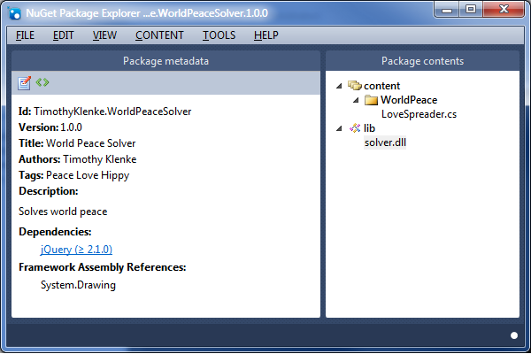

In my previous post I stated that NuGet solves a number of problems when working with open source libraries. These problems were finding, downloading, controlling, referencing, upgrading and managing dependencies of those libraries. These problems aren’t limited to open source or third party libraries. These problems also exist with the internal libraries you produce. NuGet can solve these problems in an internal context as well.
Before we create a package lets take a look at what a package is and what it contains. In my previous post I mentioned that a NuGet package is a “.nupkg” file that the downloader will put in the MySolution\packages\PackageID.version folder.
Despite the file extension, this file is actually a common ZIP file. You can rename it with the ZIP extension and decompress it as normal. If you do this there are two important artifacts that you’ll find in there: a “.nuspec” file and a lib and/or content folder.
The nuspec file is an XML file. This contains all the metadata about the package. It contains the unique NuGet ID, version number, title, tags, description, license, and dependency information. When you are viewing the package in the “Manage NuGet Packages” screen (see previous post) you’ll notice that all the detail information displayed on the right hand side is hosted within this nuspec file.
The second artefact(s) in the nupkg file is the lib and/or content folders. The lib folder contains any DLLs that should be referenced by the projects that install the package. The content folder contains any code files that should be added to the projects that install the package. Any subfolder structure under the content folder will be carried into the project when the code files are installed.
As you may have guessed to create a NuGet package you’ll need to create a nuspec file. Sure you can copy and edit an existing file, but there is an easier way. Download the NuGet Package Explorer here. This tool will let you easily create a nuspec file and nupkg file. It also lets you open existing packages from your computer or from an online feed. Let’s open this up and create a new package.

On the left is the package metadata. There are two buttons in the tool bar. The Edit button on the left goes into a nice form driven UI to edit all the properties. The Angle Brackets button on the right lets you look at or edit the raw nuspec XML data. Let’s go into the edit mode and look at the important properties. The required properties will be in bold.
The Id is the unique ID for this package. The Version identifies the version of the package. It is important that a semantic versioning strategy is used so that NuGet can properly manage the order of releases and recommend upgrades appropriately. To offer an upgrade increment the version number, but leave the same Id value.
Enter in Title, Author, Description and License as desired. The Tags field is a space separated list of keywords that can help with searching by end users from the Manage NuGet Packages dialog in Visual Studio.
Next is dependencies. You can have dependencies on libraries contained in the .NET Framework or other NuGet packages.
There are a lot of DLLs available in the .NET framework, but there is no guarantees to which one the people installing your package have already referenced in their project. If your library depends on one of those framework assemblies you can tell NuGet to reference that DLL when installing your package if it isn’t already.
You may also reference other NuGet packages. Do this by clicking the “Edit dependencies” button while in edit mode. Add a group (I’m not going to go into framework targeting in this post), then click the little properties icon to add a dependency from a NuGet feed. Click on the package and hit the “open” hyperlink to add it. The version you choose will be the minimum version required. You can specify a version range for the package if you wish.
Last comes the contents. This is on the right pane. Use the CONTENT menu at the top to add either a content or lib folder. You can also add subfolders to the “content” folder. Use the menus to add your code files or DLLs to the package or simply drag and drop them.
The last step is to simply save the package (Ctrl+S). This saves everything into a nupkg file.
So now that we have a package this next step is let people have access to it. There are a few options on how to do this.
You can make your package publically available by uploading it to the nuget.org web site. You’ll need to create an account in order to do this. I’m not going to cover this in this post.
What if you don’t want to make your package publically available; what if you only want to make it available internally to your own company. There are options for this. The nuget.org site is completely open source. You can download this full web site and stand it up on your own servers. Alternatively you can install a web service that manages packages similar to nuget.org. These installations will handle security, give you download counts, and host the packages in an OData feed.
However, the simplest way to set up an internal NuGet feed is simply to drop the nupkg files on a file share. It doesn’t have the bells and whistles of a web service, but its simple and it works.
Once you’ve created your NuGet feed, developers can access it through Visual Studio just like the nuget.org or Microsoft feeds. On the “Manage NuGet Packages” screen in the bottom left is a “Settings” button. This takes you to the Visual Studio Tools-Options-Package Manager-Package Sources page. Here you can add new feeds to the NuGet package manager. Simply add the UNC path of the file share with your NuGet packages and you are off and running.
Above is described the manual process of using the NuGet Package Explorer to create a nuspec and nupkg file. It is of course possible to automate this process as new versions of your package are built. This is done using the same NuGet.exe file described in my previous post.
For your version 1.0.0 release you’d create the nuspec file using the NuGet Package Explorer. Place this file in an empty directory. Then add a content or lib subfolder and add the code files or DLLs to be included in the package. Then it is a simple command line call to nuget.exe to build the nupkg file.
Note that the nuspec file contains the version number to assign to the package. This can be problematic to update from an automated build process. Thankfully, the nuget.exe program provides a command line option so that the version number can be overridden.
The full call is:
nuget.exe pack "C:\Path\MyLib.nuspec" -Version 1.0.1
Hopefully that’s enough information to get you started creating some simple packages. There are a lot more features available, such as targeting different frameworks, injecting or transforming app.config files, or working with the Package Manager Console. For further reading please check out the NuGet Docs.